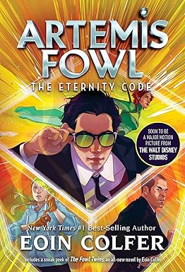
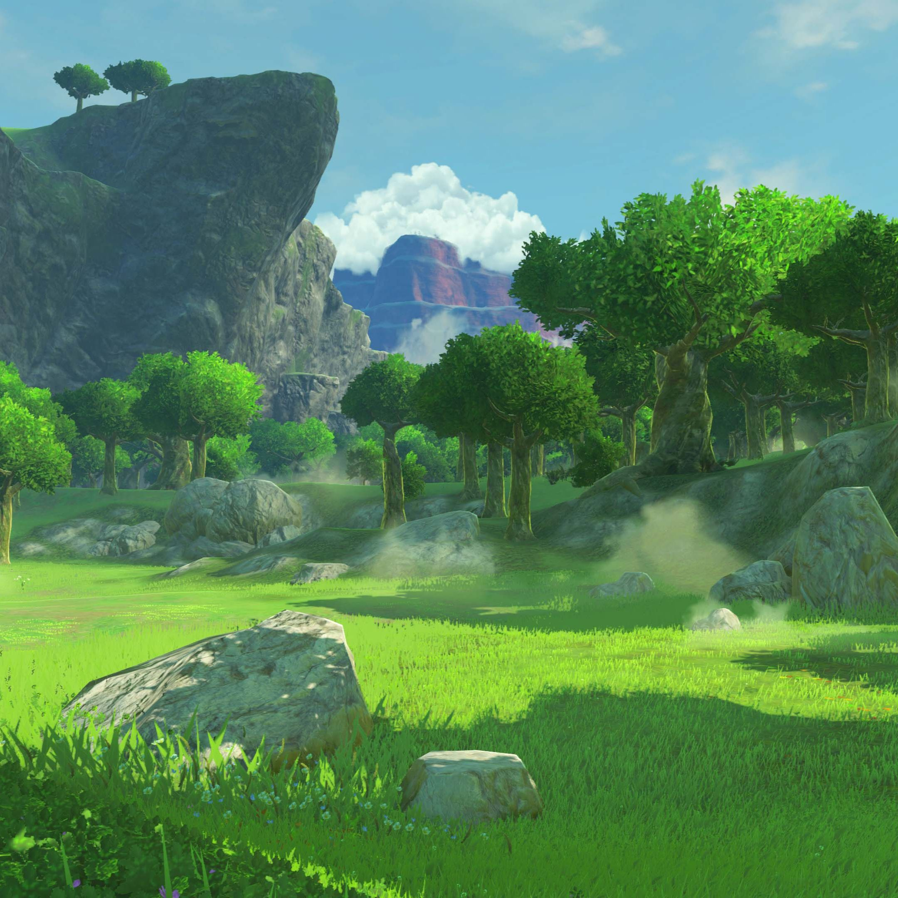
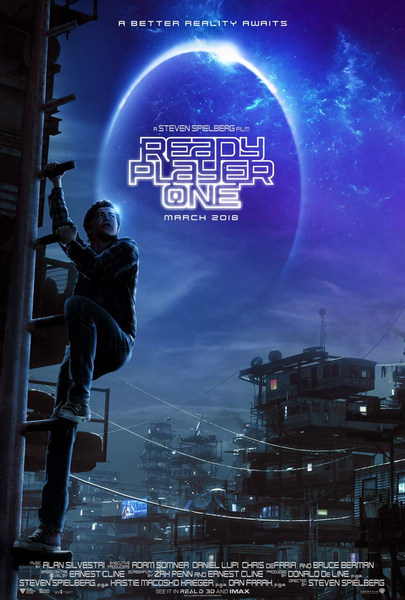

Favorite Book:
Artemis Fowl: The Eternity Code

In the third book in the series, Artemis Fowl faces off against a
demented business man who is trying to decypher the secrets of
Artemis Fowl's new invention.
I really enjoy this book as it heavily shows the potential of future technology when it could potentially fall into the hands of a narsasistic billionare.
Favorite Audio Track:
Tenpers Universe - Legend Of Zelda • Calming & Relaxing Music Compilation
Tenpers Universe takes different songs from Nintendo games and combines them into compilations.
Favorite Movie:

Ready Player One follows the tale of Wade Watts as he and everyone on
Earth searches for the
mystical Easter Egg hidden in the OASIS,
the virtual universe created by James Haliday